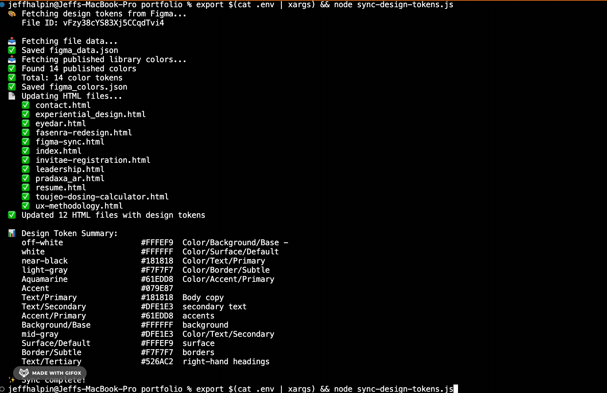

An automated workflow that syncs design tokens from Figma to code, keeping the design system and front-end implementation in perfect alignment.

Keeping design tokens synchronized between Figma and code is a persistent challenge in design-development workflows. Manual updates are error-prone, time-consuming, and often lead to drift between what designers specify and what gets implemented. A color change in Figma might take days to propagate to the codebase, or worse, get transcribed incorrectly.
For this portfolio project, I wanted a single source of truth: update colors in Figma, run a command, and have the code update automatically. No copy-pasting hex values, no version mismatches.
Solo developer and designer. I scoped the requirements, evaluated existing solutions, designed the workflow, and built the tool.
I evaluated existing solutions including Tokens Studio, Style Dictionary, and Figma's native Variables. These tools are powerful but optimized for enterprise workflows: multi-platform output, version control integration, and team collaboration features. For a solo portfolio project with a single output target (Tailwind CSS), they introduced unnecessary complexity.
I needed something simpler: pull colors from Figma, update Tailwind config, done. No plugins, no build pipeline, no dependencies beyond Node.js.
1. Direct API integration over plugin abstraction
I built a Node.js script that connects to the Figma API directly, extracts all published color styles from my design system file, and updates the Tailwind CSS configuration. During development, I discovered that Figma's API requires the X-Figma-Token header rather than the more common Authorization: Bearer pattern. This debugging experience reinforced the importance of reading API documentation carefully and testing authentication flows early.
2. Zero external dependencies
The tool has no dependencies beyond Node.js itself, making it portable and easy to integrate into any project. It supports both published library colors and document-level style extraction as a fallback.
3. Tailwind-native output
Rather than generating intermediate JSON that requires further transformation, the script outputs a Tailwind-compatible color configuration directly. This eliminates an entire step from the workflow and reduces potential points of failure.
The tool actively powers this portfolio. Every color on jeffhalpin.com syncs directly from my Figma design system file. When I adjust a color in Figma, a single terminal command updates the Tailwind configuration across the entire site.
The real value is time saved on consistency maintenance. Without automation, keeping hex values aligned between design files and code requires manual checking and transcription. That work now takes seconds instead of minutes, and eliminates transcription errors entirely.
The tool is open source and available on GitHub.
Existing tools like Tokens Studio and Style Dictionary are powerful, but they come with learning curves and configuration overhead. For a focused use case with a clear output target, building a custom solution taught me more about the underlying systems than configuring someone else's tool would have.
Understanding the Figma API directly, rather than through a plugin abstraction, gave me insight into how design data is structured and accessed. That knowledge transfers to future projects in ways that plugin configuration does not.
Next steps include expanding the tool to sync typography and spacing tokens.
Personal Project
Design Systems
Automation
API Integration
Front-end Development
Developer / UX Engineer
2025
Node.js
Figma API
Tailwind CSS
JavaScript
Sync Script
Documentation
GitHub Repository